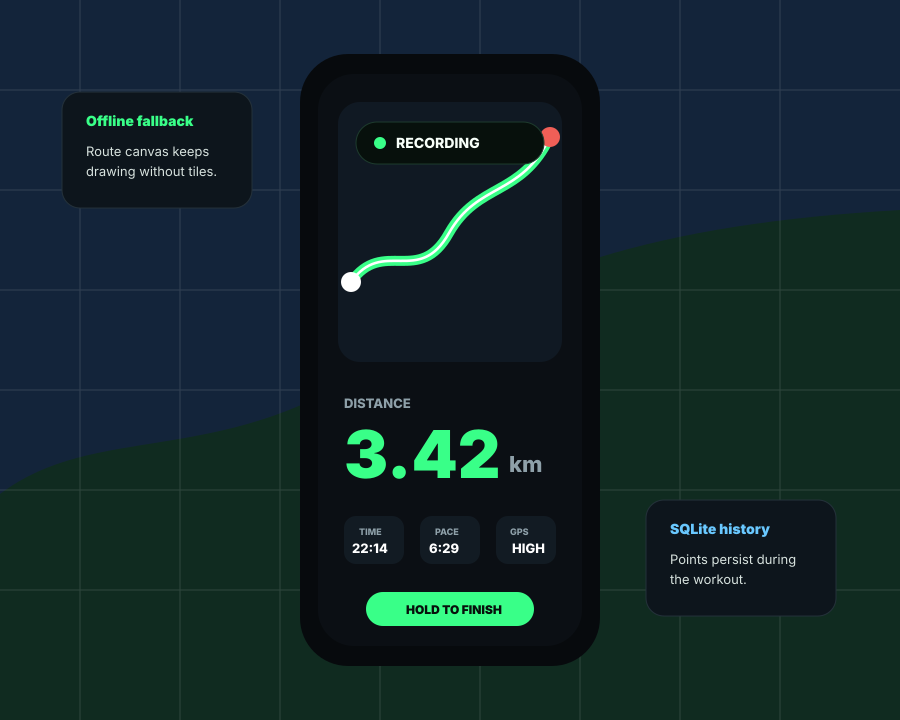

Load your location first
The app can preload your current position before you start. If Android Location is off, it opens the device settings instead of silently failing.
Native Android GPS tracker
A focused running and walking tracker that records your route, pace, distance, and history while handling the messy parts: lock screens, backgrounding, missing map tiles, and interrupted sessions.

Workout flow
The app can preload your current position before you start. If Android Location is off, it opens the device settings instead of silently failing.
Tracking runs in a native Android foreground service, so the timer and GPS listener are not tied to the visible screen staying open.
Accepted GPS points are written during the session, not only at the end. That makes crash recovery and mid-session reopen behavior more honest.
Completed sessions appear in history with distance, duration, pace, route preview, detail stats, and a route-safe fallback view.
Reliability decisions
The tracker filters noisy points, rejects implausible GPS jumps, avoids saving zero-data sessions, and marks abandoned active rows as incomplete instead of pretending a stale workout is still live.
Common questions
This build is meant for direct testing before a store release. It keeps distribution simple while the tracking behavior, route storage, and interruption handling are still being validated.
The manifest requests location permissions for GPS tracking, foreground service and notification permissions so tracking can keep running visibly, wake lock support for active sessions, and network access for OpenStreetMap tiles. No account or map key is used.
Tracking runs in a native Android foreground service, so it is not tied to the screen being open. Android can still apply device-specific battery limits, but the app is built around the standard long-running tracking path.
Accepted GPS points are persisted while the session is moving, not only when you stop. On cleanup, abandoned active rows are marked incomplete instead of being treated as a finished workout.
What you see
Preload your position
Load location and confirm the map area before recording starts.
Distance, time, pace, and route update while the service records.
Saved sessions appear in history with route previews and details.
Install build
This is a debug APK for direct testing on your Android device. Install it manually, grant location permission, then use Get Location before Start.